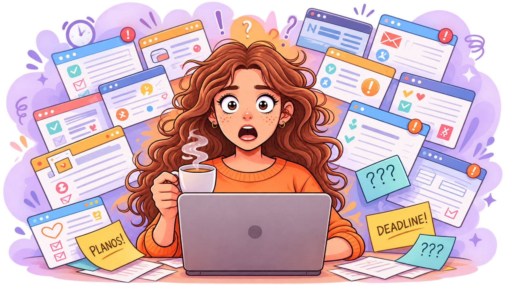
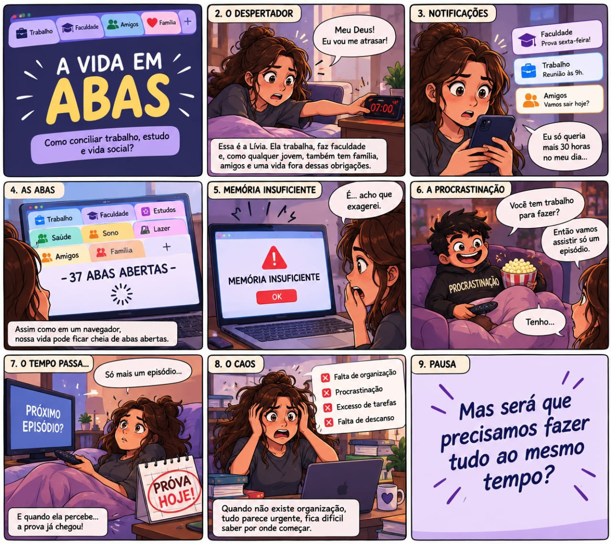
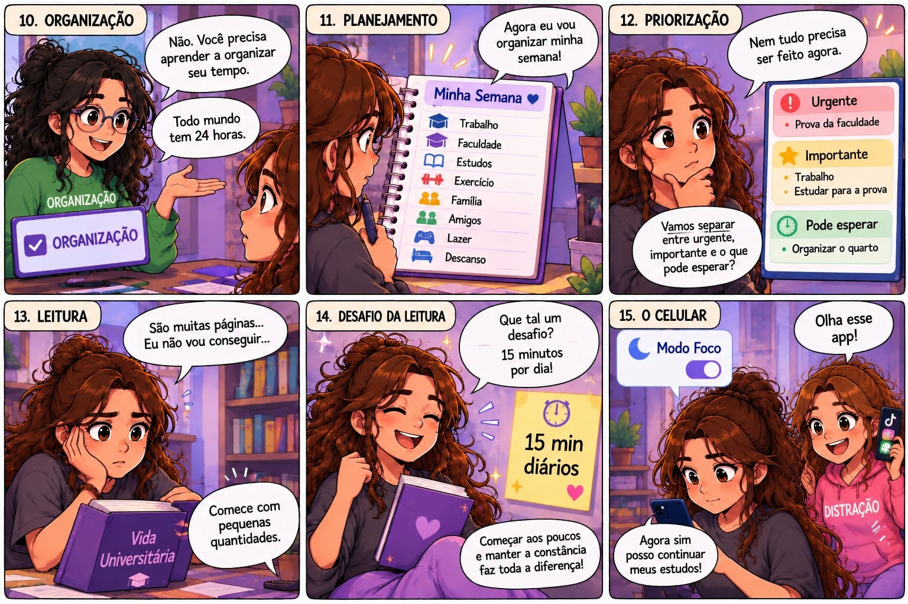

Organize prioridades
Divida suas tarefas em pequenas etapas.
Um espaço para compreender os impactos da sobrecarga mental na vida de jovens universitários.
Explorar projeto ↓
🎓 Faculdade 💼 Trabalho ♡ Vida pessoal ☾ DescansoConheça a história de uma jovem universitária que tenta equilibrar estudos, trabalho e vida pessoal.

Quando muitas tarefas se acumulam, nossa mente também sente os impactos.


O excesso de tarefas, estímulos e preocupações pode contribuir para a sobrecarga cognitiva, afetando processos como atenção, memória de trabalho e aprendizagem. Quando tentamos lidar com muitas informações ao mesmo tempo, podemos encontrar dificuldades para manter o foco e organizar nossas prioridades. Por isso, colocar as tarefas no papel ajuda: em vez de tentar lembrar de tudo, conseguimos visualizar nossas responsabilidades e direcionar melhor nossa atenção.
Mas planejar é apenas o primeiro passo. Para transformar uma ação em hábito, precisamos repeti-la. Nosso cérebro possui a capacidade de se adaptar por meio da neuroplasticidade, fortalecendo conexões entre neurônios conforme aprendemos e praticamos comportamentos. Assim, começar estudando 15 minutos por dia, organizar a agenda todas as noites ou separar um horário para descansar são pequenas atitudes que, quando repetidas em contextos semelhantes, podem se tornar cada vez mais naturais.
A diferença está na maneira de construir a rotina: enquanto a sobrecarga é alimentada pelo acúmulo de responsabilidades, falta de organização, distrações e ausência de descanso, uma rotina mentalmente mais saudável é construída com planejamento realista, prioridades, períodos de concentração, pausas, sono adequado, lazer e convivência social. Você não precisa mudar tudo de uma vez: comece pequeno, mantenha a constância e respeite seus limites. Afinal, o objetivo não é ter uma rotina perfeita, mas construir uma vida mais equilibrada e sustentável.
Escolhemos esse formato para transformar situações comuns da vida universitária em uma narrativa visual, acessível e fácil de reconhecer. As várias abas representam as demandas que disputam nossa atenção.
Responda a cinco perguntas do Mind Plan, iniciativa do Serviço Nacional de Saúde do Reino Unido, e receba dicas personalizadas para cuidar da saúde mental, melhorar seus hábitos e encontrar mais equilíbrio na rotina.
Acessar o quiz ↗ Fonte: NHS – Every Mind Matters. Ferramenta de orientação sobre bem-estar mental. Não substitui avaliação profissional.Divida suas tarefas em pequenas etapas.
Reserve momentos para descansar.
Valorize uma rotina de descanso.
Procure apoio quando necessário.